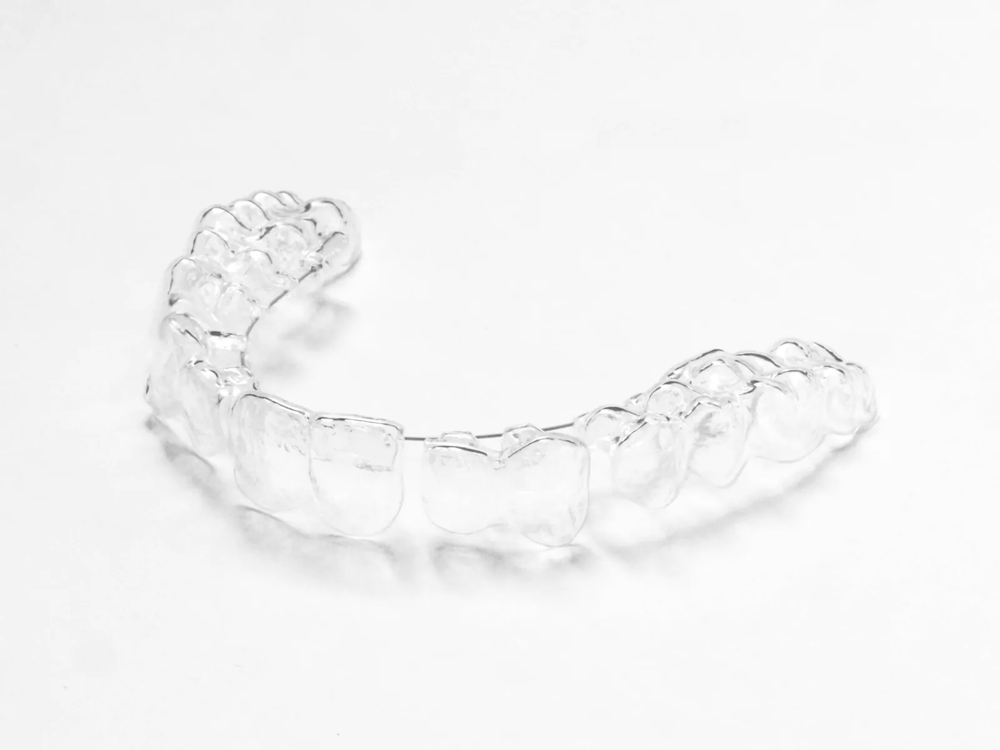
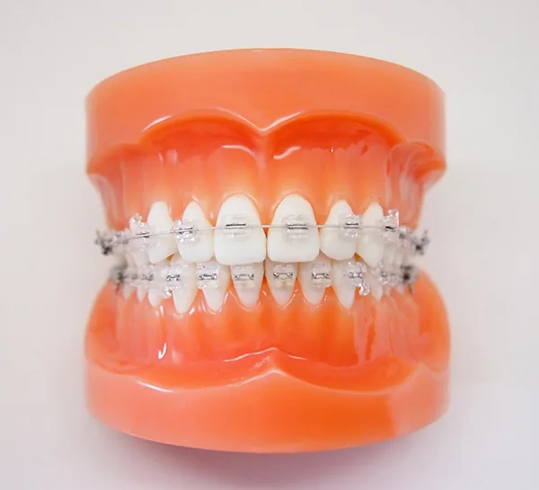
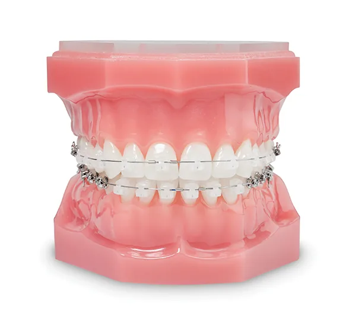
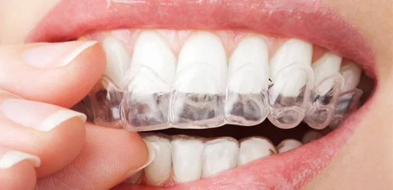

교정장치의 종류

교정장치는 세라믹·레진 교정, 자가결찰 브라켓
한눈에 보기
- 진료 층
- 3층 교정센터
- 바깥쪽에 붙이는 장치
- 세라믹·레진 · 자가결찰(데이몬·클리피씨)
- 안쪽에 붙이는 장치
- 콤비네이션(윗니만 안쪽) · 설측(위아래 모두 안쪽)
- 빼었다 끼우는 장치
- 투명교정
- 비용
- 진찰 후 항목별로 미리 안내합니다
진료하는 의료진

바깥쪽에 붙이는 장치

세라믹·레진 교정
- 브라켓이 투명해 눈에 잘 띄지 않습니다
- 비용은 장치마다 달라 상담 때 안내합니다

자가결찰 브라켓
(데이몬·클리피씨) - 브라켓 자체에 잠금장치가 있어 철사를 묶는 결찰선이 필요 없습니다
- 결찰선이 없어 구강 위생 관리에 유리합니다
안쪽에 붙이는 장치 — 콤비네이션 · 설측
- 콤비네이션 교정
- 윗니는 치아 안쪽, 아랫니는 바깥쪽에 장치를 붙입니다. 자세히 보지 않으면 장치가 잘 보이지 않습니다. 윗니보다 아랫니가 많이 보이는 분은 장치가 보일 수 있고, 처음에는 음식 먹기와 발음이 조금 어려울 수 있습니다.
- 설측 교정
- 위아래 모두 치아 안쪽에 붙여 밖에서 잘 보이지 않아, 장치가 보이지 않기를 바라는 분이 고릅니다. 처음에는 발음과 음식 먹기가 조금 어려울 수 있습니다.
옆에서 자른 단면 그림입니다. 파란 네모가 장치를 붙이는 자리입니다.
빼었다 끼우는 장치 — 투명교정
투명교정은 치아에 브라켓을 붙이지 않고 투명하게 만든 교정기를 끼우는 방식입니다. 일상에서 잘 보이지 않고, 꼭 필요할 때는 빼었다 다시 낄 수 있습니다.
앞니가 약간 삐뚤거나 치아 사이가 조금 벌어진 경우처럼 가벼운 부정교합에 맞는 장치입니다.

자주 묻는 질문
교정 장치가 밖에서 안 보이게 할 수 있나요?
설측 교정은 위아래 모두 치아 안쪽에 붙여 밖에서 잘 보이지 않고, 콤비네이션 교정은 윗니만 안쪽에 붙입니다. 가벼운 부정교합은 투명교정 장치를 쓰기도 합니다.
투명교정은 누구나 할 수 있나요?
투명교정은 앞니가 약간 삐뚤거나 치아 사이가 조금 벌어진 것처럼 가벼운 부정교합에 맞는 장치입니다. 맞는지는 교정 진단 뒤 안내합니다.
진료시간 · 오시는 길
031-683-7575경기도 평택시 안중읍 안중로 132
- 성심주차장을 이용하시면 주차권에 병원 도장을 찍어 드려 무료로 주차할 수 있습니다
(이면도로 주차는 유료). - 본원 뒤 주차장은 자리가 좁습니다. 이용하실 때는 주차권을 받아 가셔야 나가실 수 있습니다.
진료시간
- 월
- 전체
- 오전 9시 ~ 오후 6시교정과 오전 10시 ~ 오후 6시
- 화
- 전체
- 오전 9시 ~ 오후 8시
- 수
- 3층
- 오전 9시 ~ 오후 6시
- 목
- 2층
- 오전 9시 ~ 오후 8시
- 금
- 전체
- 오전 9시 ~ 오후 8시2층 오전 9시 ~ 오후 6시교정과 오후 2시 ~ 8시
- 토
- 전체
- 오전 9시 ~ 오후 2시점심시간 없음
- 점심
- 평일
- 오후 1시 ~ 2시
- 휴진
- 일요일 · 공휴일 휴진
교정은 3층 교정센터에서 진료합니다.